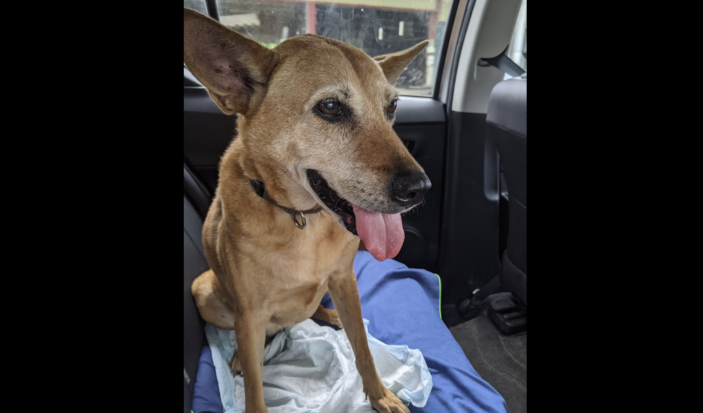

說來好笑，我自己做專案管理但私底下都沒在寫年度計畫的…
仔細想想可能是因為一直以來的我，在工作時間和自己休假的時間，所呈現的幾乎是兩個極端的個性，就像有兩個人格一樣，一個是軟爛耍廢的懶惰鬼，另一個是積極熱情的工作狂。
以往的我，總是派出積極熱情的工作狂出去工作賺錢，下班和休假時間軟爛耍廢的懶惰鬼這個人格才會出來釋放壓力。而當自己對工作太執著或是太常加班的時候，就會陷入惡性循環。
最近幾個月，生活遇到好幾個大事件，包括陪我十幾年的老狗Ghini生病到過世，老家阿公過世，妹妹生病住院，當自己狀況不好的時候會懷疑去年是不是犯太歲還是怎樣，所有難熬的事情一件接著一件來…。但回復理智勇敢面對每件事好好去面對去處理完以後，現在回過頭看卻慶幸，還好這些事件是一件接著一件來，每一件我都有足夠的時間好好處理完，才來下一件事。
雖然我阿公過世的時候Ghini已經腎功能退化開始需要每天打點滴了，還好有達達動物醫院的幫忙，讓Ghini可以住院，我才能回彰化幾天陪家人和處理葬禮。
最近想想也是蠻感謝當初自己有設定目標找遠端優先的工作，2022年初順利找到AI領域的工作以外，大部分時間還能在家上班。也還好當初Ghini腎衰竭三個月後，我決定離職好好陪伴她最後的時間，隨然她10月底過世後到現在，很想她的時候還是會突然就爆哭QQ，（雖然其實會決定離職也是有些其他因素，但那之後有機會再說了XD）。
 寫到這邊又想狗了，找了一張2021年和朋友們去宜蘭玩的路上拍的可愛照片
在我好不容易開始接受狗沒了的生活以後，我妹出了點狀況爆掉了，現在回想真的很感謝身邊的朋友們接住我，那時擔心自己齁不住而去找了心理諮商，最後感謝妹妹，勇敢面對遇到的狀況、住院就醫治療，雖然整個過程花了一點時間，加上有一段時間需要淡水內湖兩邊跑，這時候真的很慶幸我沒有上班，可以有時間好好花時間做功課瞭解狀況和陪伴。
現在事情都過去了，真心感謝身邊的親友們甚至神佛保佑，整個過程中我自己也學到非常多東西，總之人平安就是萬幸了！
綜合以上的幾件事，條列式紀錄我在2022年最重要的幾個心得：
最近我在線上進修專案管理的課程，發現了一些我自己過去的盲點，有些是來自於自己想法的執著，有些可能來自工作倦怠，我發現了以下問題：
現在真的慶幸沒上班的這幾個月能有機會好好面對這些問題、持續學習，找出解決方案，雖然我沒有把握藥到病除，但至少找到努力的方向，並且決定好好花時間把這些思考用文字記錄下來，有了記錄和追蹤，至少之後遇到難題的時候可以持續依照目標去檢視和調整。
這週剛好看到《原子習慣》的作者James Clear 分享的：
“The more an idea is tied to your identity, the more you will ignore evidence it is false. To continue to grow and learn, you must be willing to update, expand, and edit your identity.” – James Clear
剛好讓我想到自己最近在思考的學習成長、回顧自己的狀態，得到一些啟發，我想我的2023年的目標訂定會有以下策略上的調整：
具體內容就下篇文章待續了，昨天和前天重新學習了OKRs，剛好有動手寫下了今年的幾個目標，這也是激發我寫這篇文章的原因，不過接下來我還需要大約一週的時間，去反覆檢視調整，加上時間和資源的評估，並自我質疑辯論去排序和取捨。
當我認真用這樣的角度來看待我想完成的事情，也漸漸發現，雖然對未來還是有點徬徨焦慮，但經過幾天的實作，有種越來越安心的感覺了！
2023會是個好年，繼續加油！！